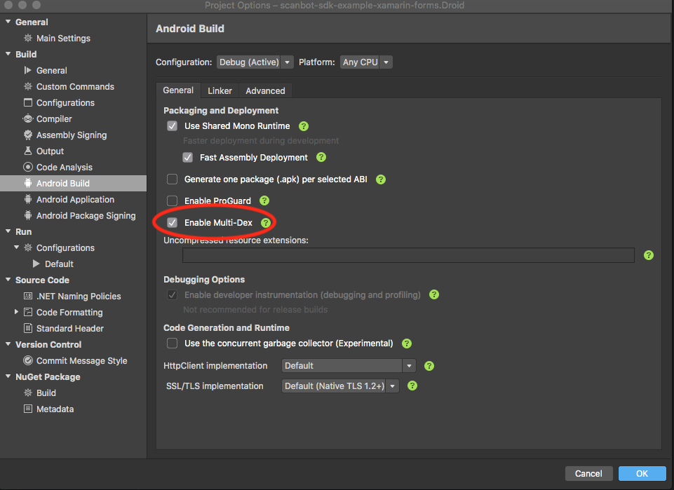
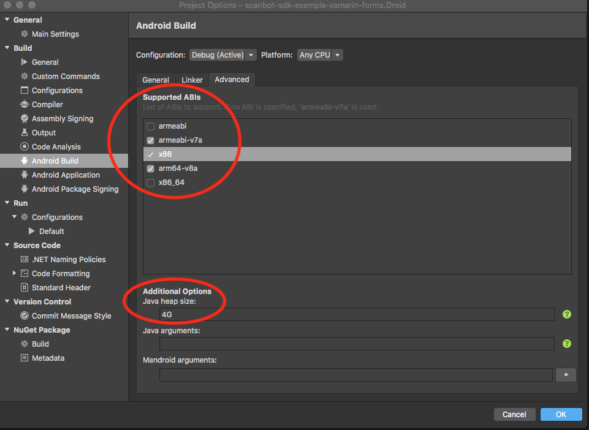
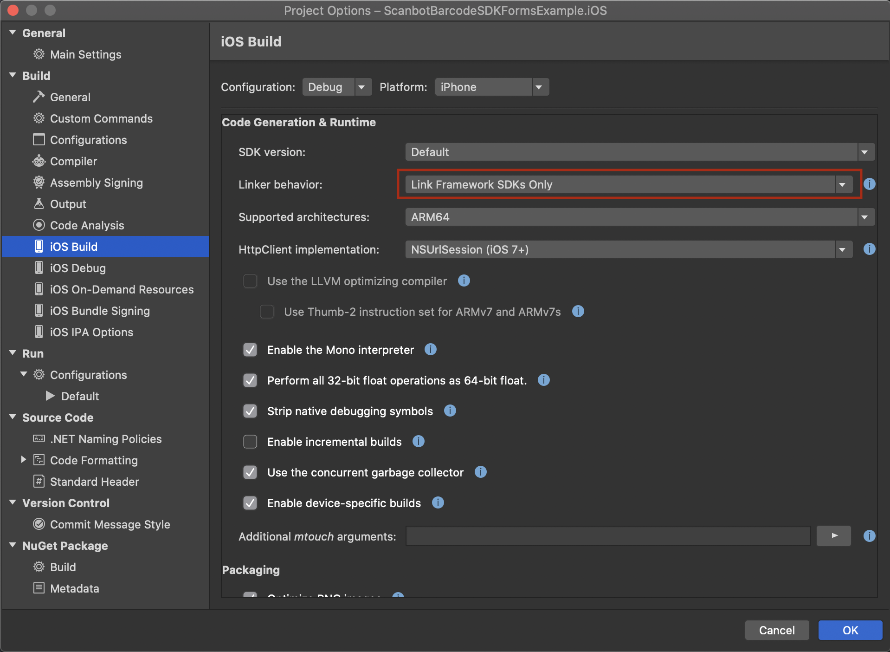

Scanbot Barcode Scanner SDK for Xamarin and Xamarin.Forms
Introduction
The Scanbot Barcode Scanner SDK brings barcode scanning capabilities to your mobile apps. The Xamarin SDK provides bindings for Xamarin Native as well as a ready-to-use implementation for Xamarin.Forms.
Following functionality is covered by the Xamarin SDK:
- Scanning of 1D and 2D barcodes
- Recognition of 1D and 2D barcodes on still images (e.g. JPG files)
- Support for multiple barcode scanning and recognition
- Ready-to-Use UI Components for Xamarin.Forms and Xamarin Native (Android and iOS)
- Classical SDK Components for Xamarin Native (Android and iOS) with full customization support
Supported Barcode Types
1D Barcodes
- Code 39
- Code 93
- Code 128
- Codabar
- UPC-A
- UPC-E
- EAN-8
- EAN-13
- ITF (Interleaved 2 of 5)
2D Barcodes
- QR-Code
- Aztec
- PDF-417
- Data Matrix
💡 You might also be interested in an overview in our blog post Types of barcodes.
Requirements
Dev Tools
- Latest version of Microsoft Visual Studio with Xamarin Platform
- For Xamarin.Forms projects: Xamarin.Forms v2.2+ and higher
- For iOS development: Mac OS with latest Xcode and Command Line Tools
- For Android development: Android SDK
Mobile Platforms
- Android 5.0 (API Level 21) and higher
- iOS 11 and higher
Mobile Devices
- Rear-facing camera with autofocus
- Supported CPUs and Architectures:
- Android:
armeabi-v7,arm64-v8a,x86,x86_64 - iOS:
arm64,x86_64
- Android:
No Internet Connection Required
The Scanbot Barcode Scanner SDK works completely offline. It doesn’t even contain any networking code. This can easily be verified by routing all networking traffic coming from the app through a proxy. All data generated by the Scanbot Barcode Scanner SDK is only stored on the end users device and in absolutely no case ever transferred to a server / cloud service controlled by us. You as the customer will need to take care of uploading the scans / data to your backend, if desired.
Example Apps
Check out our example apps for Xamarin Native and Xamarin.Forms on GitHub:
Getting Started
Download & Installation
The Scanbot Barcode Scanner SDK for Xamarin is provided as 2 NuGet packages:
- ScanbotBarcodeSDK.Xamarin - contains the Scanbot Barcode Scanner SDK Xamarin Native bindings and wrappers for Android and iOS
- ScanbotBarcodeSDK.Xamarin.Forms - provides portable Scanbot Barcode Scanner SDK wrappers for use with Xamarin.Forms
Install ScanbotBarcodeSDK.Xamarin.Forms if your project is based on Xamarin.Forms,
otherwise install ScanbotBarcodeSDK.Xamarin.
You can install them directly via Visual Studio IDE: Open your App-Solution in Visual Studio,
select your iOS or Android project and click on the menu item Project -> Add NuGet Packages.
Make sure nuget.org is selected as source and search for the package.
By clicking on Add Package the Scanbot Barcode Scanner SDK will be downloaded and installed into your project.
Do that for both your iOS and Android projects.
Also, ScanbotBarcodeSDK.Xamarin.Forms must be installed in the portable app project
(if one exists - not necessary if you’re using a shared project).
Force registration of native dependencies.
Add the following lines to your MainActivity and AppDelegate, respectively:
ScanbotBarcodeSDK.Forms.Droid.DependencyManager.Register();
ScanbotBarcodeSDK.Forms.iOS.DependencyManager.Register();
Android Settings
Enable Multi-Dex
Android Project => Options => Android Build => General => Enable Multi-Dex

ABI Settings
The Scanbot Barcode Scanner SDK uses native libraries under the hood and supports following
ABIs:
armeabi-v7a, arm64-v8a, x86 and x86_64.
Please adjust the Supported ABIs configuration in your Android project settings accordingly:
Android Project => Options => Android Build => Advanced => Supported ABIs …

Please note:
In most cases the architectures x86 and x86_64 can be removed for the release (production) build,
since they are only used on emulators and on some rare devices with the Intel Atom architecture.
Furthermore, please increase the Java Heap Size value to 4G. This is required for the build process.
ProGuard
If you need to enable ProGuard for your Android release build, please check this full list of the ProGuard rules for the Scanbot SDK.
iOS settings
Set Linker Behaviour to
Link SDK assemblies only

Permissions
Required permissions for Android
Make sure to add the Camera permission in your AndroidManifest.xml file:
<uses-permission android:name="android.permission.CAMERA" />
<uses-feature android:name="android.hardware.camera" />
Required permissions for iOS
Add the following properties to your Info.plist file:
- “Privacy - Camera Usage Description” (
NSCameraUsageDescription). As value describe why your app wants to access the device’s camera.
License Key
In order to run the Scanbot Barcode Scanner SDK functionality within your production app, you have to purchase and use a valid Scanbot Barcode Scanner SDK license.
Each license key is valid only for a given app bundle identifier. You will be unable to use any of the SDK features if the license key is corrupted, expired or invalid in any other way.
The Scanbot Barcode Scanner SDK will run without a license for one minute per session! To get an unrestricted “no-strings-attached” 30 day trial license, please submit the Trial License Form on our website.
Please kindly note that a trial license can only be used in a development and staging environment. You are not allowed to publish your app to the App Store, Play Store or any 3rd party Android App Store with a trial license.
SDK Features
Initialize SDK & Register License
The Scanbot Barcode Scanner SDK must be initialized before usage. Make sure to run the initialization as early as possible.
We recommend to implement the initialization in the Application class of the Android and Forms app, and in the AppDelegate class of the iOS app.
-
using IO.Scanbot.Sdk.Barcode_scanner;; [Application(LargeHeap = true)] public class MainApplication : Application { ... public override void OnCreate() { ... var initializer = new ScanbotBarcodeScannerSDKInitializer(); initializer.WithLogging(true); // To run in trial mode, simply comment out the following line: initializer.License(this, "<your-license-key>"); initializer.Initialize(this); .... } ... } -
[Register("AppDelegate")] public class AppDelegate : UIResponder, IUIApplicationDelegate { public static nfloat TopInset { get; private set; } public UINavigationController Controller { get; set; } public UIWindow Window { get; set; } [Export("application:didFinishLaunchingWithOptions:")] public bool FinishedLaunching(UIApplication application, NSDictionary launchOptions) { // To run in trial mode, simply comment out the following line: ScanbotSDK.SetLicense("<your-license-key>"); ScanbotSDK.SetLoggingEnabled(true); } } -
public partial class App : Application { public const string Key = null; public App() { InitializeComponent(); SBSDK.Initialize(new InitializationOptions { LicenseKey = Key, LoggingEnabled = true, ErrorHandler = (status, feature) => { var message = $"Error! Status: {status}; Your license is missing the feature: {feature}"; Console.WriteLine(message); } }); } }
RTU UI Components
The Ready-To-Use UI (RTU UI) Components is an easy way to integrate and customize high-level UI components (View Controllers for iOS and Activities for Android) for the most common tasks in Scanbot Barcode Scanner SDK. The design and behavior of these RTU UI Components are based on our long years of experience as well as the feedback from our SDK customers.
If you need more customization options you have to implement custom screens (View Controllers for iOS and Activities for Android) using our Classical UI Component (not available for Xamarin forms).
RTU UI Example:
-
Launching the Barcode Scanner:
var configuration = new BarcodeScannerConfiguration(); configuration.SetBarcodeImageGenerationType(BarcodeImageGenerationType.None); var intent = BarcodeScannerActivity.NewIntent(this, configuration); StartActivityForResult(intent, BARCODE_DEFAULT_UI_REQUEST_CODE);Receiving scan results:
protected override void OnActivityResult(int requestCode, [GeneratedEnum] Result resultCode, Intent data) { var barcode = (BarcodeScanningResult)data.GetParcelableExtra( BaseBarcodeScannerActivity.ScannedBarcodeExtra); var imagePath = data.GetStringExtra( BaseBarcodeScannerActivity.ScannedBarcodeImagePathExtra); var previewPath = data.GetStringExtra( BaseBarcodeScannerActivity.ScannedBarcodePreviewFramePathExtra); } -
Launching the Barcode Scanner:
var configuration = SBSDKUIMachineCodeScannerConfiguration.DefaultConfiguration; configuration.BehaviorConfiguration.BarcodeImageGenerationType = SBSDKBarcodeImageGenerationType.None; var receiver = new BarcodeResultReceiver(); SBSDKUIBarcodeScannerViewController.PresentOn( this, SBSDKBarcodeType.AllTypes, configuration, receiver );Receiving scan results:
public class BarcodeResultReceiver : SBSDKUIBarcodeScannerViewControllerDelegate { public override void QrBarcodeDetectionViewController( SBSDKUIBarcodeScannerViewController viewController, SBSDKBarcodeScannerResult[] barcodeResults) { Invoke(viewController, barcodeResults, null, null); } public override void QrBarcodeDetectionViewController( SBSDKUIBarcodeScannerViewController viewController, UIImage barcodeImage, NSUrl imageURL) { } void Invoke(SBSDKUIBarcodeScannerViewController viewController, SBSDKBarcodeScannerResult[] barcodeResults, UIImage barcodeImage, NSUrl imageURL) { } } -
Launching the Barcode Scanner:
var configuration = new BarcodeScannerConfiguration(); BarcodeResultBundle result = await SBSDK.Scanner.Open(config);
For a fully-fledged example, please see our example app scanbot-barcode-scanner-sdk-example-xamarin on GitHub.
Classical UI Components
Our Classical UI Components allows you to build your custom screens which are very flexible and fully customizable. It is a set of easy to integrate and customize components (Views, Buttons, Handlers, Controllers, etc.) which can be embedded and extended in your custom screens.
For more details please see the documentation of our native Barcode Scanner SDKs for iOS and Android as well as our example apps.
For a fully-functional example, please see our example app scanbot-barcode-scanner-sdk-example-xamarin on GitHub.
Classical UI Example:
-
Implementing custom Activity that holds
ScanbotCameraView:public class CameraViewActivity : AppCompatActivity, ICameraOpenCallback, IPictureCallback { ScanbotCameraView cameraView; ImageView resultView; bool flashEnabled; BarcodeDetectorFrameHandler handler; const int REQUEST_PERMISSION_CODE = 200; protected override void OnCreate(Bundle savedInstanceState) { base.OnCreate(savedInstanceState); cameraView = FindViewById<ScanbotCameraView>(Resource.Id.camera); resultView = FindViewById<ImageView>(Resource.Id.result); cameraView.SetCameraOpenCallback(this); var SDK = new ScanbotBarcodeScannerSDK(this); handler = BarcodeDetectorFrameHandler.Attach(cameraView, SDK.BarcodeDetector()); handler.SetDetectionInterval(1000); handler.AddResultHandler(new BarcodeResultDelegate()); handler.SaveCameraPreviewFrame(true); var snappingcontroller = BarcodeAutoSnappingController.Attach(cameraView, handler); snappingcontroller.SetSensitivity(1f); cameraView.AddPictureCallback(new PictureCallbackDelegate()); } protected override void OnResume() { base.OnResume(); cameraView.OnResume(); } protected override void OnPause() { base.OnPause(); cameraView.OnPause(); } public void OnCameraOpened() { cameraView.PostDelayed(delegate { cameraView.UseFlash(flashEnabled); cameraView.ContinuousFocus(); }, 300); } }Parsing results:
class BarcodeResultDelegate : BarcodeDetectorFrameHandler.BarcodeResultHandler { public override bool Handle(FrameHandlerResult p0) { var success = (FrameHandlerResult.Success)p0; if (success != null && success.Value != null) { var value = (BarcodeScanningResult)success.Value; return true; } return false; } }Handling picture taken:
class PictureCallbackDelegate : PictureCallback { public EventHandler<PictureCallbackEventArgs> OnPictureTakenHandler; public override void OnPictureTaken(byte[] image, int imageOrientation) { // Picture taken, process result } } -
Implementing custom UIViewController that holds the
SBSDKBarcodeScannerViewController:public class ClassicScannerController : UIViewController { SBSDKBarcodeScannerViewController scannerController; ClassicScannerReceiver receiver; public override void ViewDidLoad() { base.ViewDidLoad(); scannerController = new SBSDKBarcodeScannerViewController(this, View); receiver = new ClassicScannerReceiver(); scannerController.Delegate = receiver; } public override void ViewWillAppear(bool animated) { base.ViewWillAppear(animated); receiver.ResultReceived += OnScanResultReceived; } public override void ViewWillDisappear(bool animated) { base.ViewWillDisappear(animated); receiver.ResultReceived -= OnScanResultReceived; } private void OnScanResultReceived(object sender, ClassicScannerEventArgs e) { Console.WriteLine("Results received"); } }Result receiver:
public class ClassicScannerReceiver : SBSDKBarcodeScannerViewControllerDelegate { public EventHandler<ClassicScannerEventArgs> ResultReceived; public override void BarcodeScannerController( SBSDKBarcodeScannerViewController controller, SBSDKBarcodeScannerResult[] codes) { ResultReceived?.Invoke(this, new ClassicScannerEventArgs(codes.ToList(), null)); } public override void BarcodeScannerController( SBSDKBarcodeScannerViewController controller, UIImage barcodeImage) { ResultReceived?.Invoke(this, new ClassicScannerEventArgs(null, barcodeImage)); } }
Barcode Formats
The Scanbot Barcode Scanner SDK supports various barcode formats:
1D Barcodes
BarcodeFormat.Code39BarcodeFormat.Code93BarcodeFormat.Code128BarcodeFormat.CodabarBarcodeFormat.UpcABarcodeFormat.UpcEBarcodeFormat.Ean8BarcodeFormat.Ean13BarcodeFormat.ItfBarcodeFormat.MsiPlessey
2D Barcodes
BarcodeFormat.QrCodeBarcodeFormat.AztecBarcodeFormat.Pdf417BarcodeFormat.DataMatrix
Out of these, you can also filter which formats you wish to accept or not.
-
configuration.SetBarcodeFormatsFilter(new BarcodeFormat[] { BarcodeFormat.QrCode, BarcodeFormat.Aztec }); -
var formats = new SBSDKBarcodeType[] { SBSDKBarcodeType.QRCode, SBSDKBarcodeType.Aztec }; SBSDKUIBarcodeScannerViewController.PresentOn(this, formats, configuration, receiver); -
var configuration = new BarcodeScannerConfiguration(); configuration.AcceptedFormats = new List<BarcodeFormat> { BarcodeFormat.QrCode, BarcodeFormat.Aztec };
Detecting on Existing Images
Not only can you scan barcodes, the SDK also offers the option to detect barcodes on an existing still image (e.g. JPG file from Photo Library).
-
var sdk = new ScanbotBarcodeScannerSDK(this); BarcodeScanningResult result = sdk.BarcodeDetector().DetectFromBitmap(bitmap, 0); -
var scanner = new SBSDKBarcodeScanner(formats); SBSDKBarcodeScannerResult[] result = scanner.DetectBarCodesOnImage(image); -
List<Barcode> barcodes = await SBSDK.Operations.DetectBarcodesFrom(source);
Release History and Changelog
-
ScanbotBarcodeSDK.Xamarin
Version 2.0.0 (18 Nov 2020):
- 🚀 Improvements:
- Improved barcode recognition for matrix codes (QR code and Data Matrix code)
- ⚠️ Breaking changes:
- Android: Dropped legacy SupportLibs, built for AndroidX. To migrate your project please check out the documentation from Microsoft
- Android: The interface
IPictureCallbackwas replaced by an abstract classPictureCallbackthat implements theIBasePictureCallbackinterface. For adjustments see our example app on GitHub.
- 🚙 Under the hood:
- Android: Upgraded the native Scanbot Barcode Scanner SDK to v1.1.7
- 👉 Please also see:
- The Changelog of the native Scanbot Barcode Scanner SDK for Android
Version 1.1.0 (6 Nov 2020):
- 🚀 Improvements:
- Improved barcode recognition for matrix codes (QR code and Data Matrix code)
- ⚠️ Breaking changes:
- iOS: Dropped support for iOS 9 and iOS 10!
- 🚙 Under the hood:
- iOS: Upgraded the native iOS Scanbot Barcode SDK to v1.7.1
- 👉 Please also see:
- The Changelog of the native iOS Scanbot Barcode SDK
Version 1.0.2 (03 Aug 2020)
- 🚙 Under the hood:
- Android: Added relevant
Xamarin.Android.Supportlibraries as dependencies - iOS: Upgraded the native iOS Scanbot Barcode SDK to v1.5.1
- Android: Added relevant
Version 1.0.0 (03 Mar 2020)
- 🎉 First release
- 🚀 Improvements:
-
ScanbotBarcodeSDK.Xamarin.Forms
Version 2.0.0 (18 Nov 2020):
- ⚠️ Breaking changes:
- Android: Dropped legacy SupportLibs, built with and for AndroidX
See the release notes of
ScanbotBarcodeSDK.Xamarin v2.0.0
- Android: Dropped legacy SupportLibs, built with and for AndroidX
See the release notes of
Version 1.1.0 (6 Nov 2020):
- See the release notes of
ScanbotBarcodeSDK.Xamarin v1.1.0
Version 1.0.2 (03 August 2020)
- See the release notes of
ScanbotBarcodeSDK.Xamarin v1.0.2
Version 1.0.0 (03 Mar 2020)
- 🎉 First release
- ⚠️ Breaking changes: